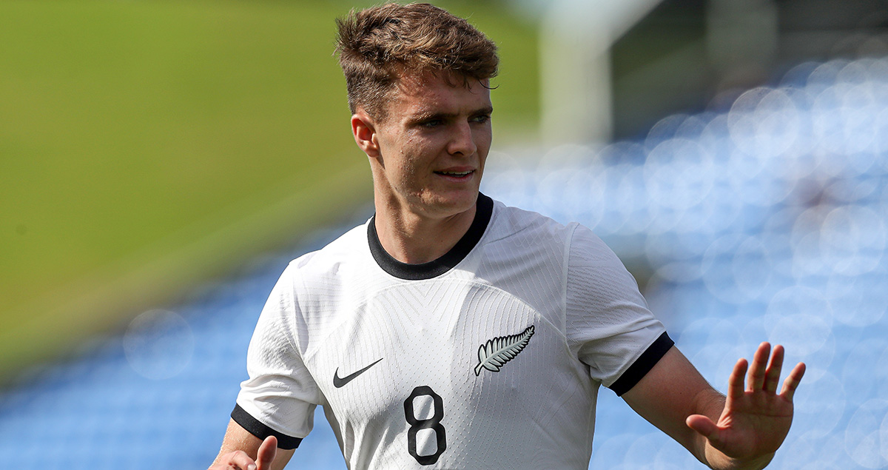
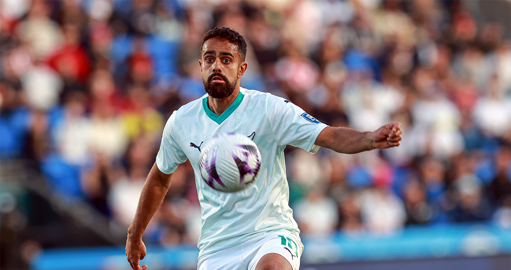

| Nombre | Posición | Edad | Biografía | Portada |
|---|---|---|---|---|
| Michael Boxall | Defensa | 37 | Nacido en 1988, Boxall es un defensor experimentado que juega en la MLS. Ha sido parte de la selección neozelandesa en múltiples torneos internacionales. |
 |
| Marko Stamenic | Volante | 23 | Nacido en 2002, Stamenic es un mediocampista técnico que juega en Europa. Es parte del recambio generacional de Nueva Zelanda. |
 |
| Ben Old | Delantero | 23 | Nacido en 2002, Old es un joven atacante que juega en Wellington Phoenix. Destaca por su velocidad y capacidad de desequilibrio. |
 |
| Liberato Cacace | Lateral izquierdo | 25 | Nacido en 2000, Cacace juega en el Empoli de Italia. Es un defensor con proyección ofensiva y presencia constante en la selección. |
 |
| Elijah Just | Extremo | 25 | Nacido en 2000, Just es un extremo veloz y habilidoso que juega en Dinamarca. Ha sido parte de la selección desde categorías juveniles. |
 |
| Tyler Bindon | Defensa central | 22 | Nacido en 2003, Bindon es un defensor joven que juega en Reading FC. Ha sido convocado recientemente a la selección absoluta. |
 |
| Chris Wood | Delantero | 33 | Nacido en 1992, Wood es el máximo goleador histórico de Nueva Zelanda. Ha jugado en la Premier League y es referente ofensivo de los All Whites. |
 |
| Sarpreet Singh | Volante ofensivo | 26 | Nacido en 1999, Singh es un mediocampista creativo que ha jugado en Alemania. Es una de las figuras emergentes del fútbol neozelandés. |
 |